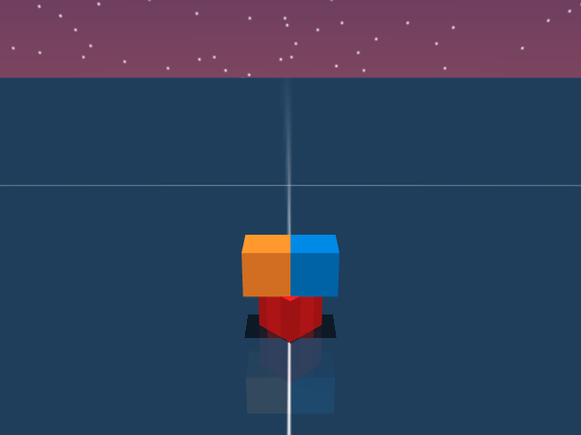
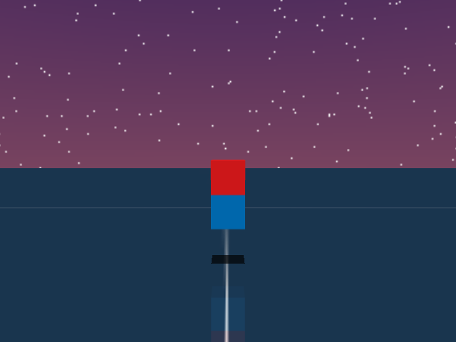
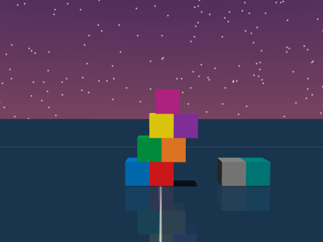

AI Agents that Generate Knowledge Must Learn via Interaction
This blog post is based on our work BuilderBench, which is a benchmark to accelerate research into training that centers around exploration. The vision for BuilderBench is to enable an open-ended stream of potential interactions, where pre-training could only ever cover a tiny slice of all possible behaviors. In the same way that vision models today can paint pictures that go well beyond what is in their training data (e.g., an astronaut mowing the lawn), we envision embodied agentic systems that can solve tasks that go well beyond the tasks they have practiced solving before.
What is this blog post about: We use BuilderBench to show that the current crop of AI agents struggle in learning to solve tasks which require exploration and creativity.
Main experiment: The figure below shows the performance of agents based on some of the strongest available language-models (as of March 2026) on hard BuilderBench tasks.[1] This blog post takes a closer look at the failure modes of these AI agents.
Key takeaway: We hypothesize that exploration, both in the space of physical interactions and the space of thoughts is the primary bottleneck.
Call for future work: We have created a public leaderboard. We encourage folks to try out their ideas and submit results to the leaderboard through our code.

What is BuilderBench?
Claude Opus 4.6 solving some simple BuilderBench tasks (permute two cubes and stack two cubes).
BuilderBench is a benchmark that requires AI agents to learn to control a robot to physically build a given target structure using building-blocks. BuilderBench is equipped with a simulator and a task-suite. The task-suite contains over 50 tasks, where each task is a target block structure that is carefully curated for evaluating unique skills. Tasks are specified by the target center of mass of blocks in the target structure. In order to succeed, the agent has to control the robot to correctly place the blocks. But doing so is not straightforward, it requires conducting various experiments and learning about the architecture and physics of block-building.
In particular, tasks require a wide variety of higher-level skills such as logical reasoning (commutativity and associativity of pick and place ordering), geometrical reasoning (maximizing overhangs, packing problems) and intuitive physics (gravity, friction, toppling, balancing). Tasks also require reasoning about counterweights, buttresses and discovering new tools for performing skills like temporary scaffolding or disassembling. Please check out the BuilderBench paper for more details on the benchmark and its philosophy.
Our central hypothesis, which motivates the use of block-building, is that the space of skills and discoveries that an agent has to know to build all possible structures is so vast, that it is impossible to memorize them at design time. An agent will always have to interact with the environment and make new discoveries to build any given target structure. In particular, we are inspired by the following quote by Paul Zeitz[3]
We distinguish between problems and exercises. An exercise is a question that you know how to resolve immediately. Whether you get it right or not depends on how expertly you apply specific techniques, but you don't need to puzzle out what techniques to use. In contrast, a problem demands much thought and resourcefulness before the right approach is found.
We believe the space of block-building tasks contains difficult problems, which not only demand thought and resourcefulness but also demand interaction with the world. Look at the visualizations of various target structures in the BuilderBench task suite below.
Agent Description
In this blog post, we will take a closer look at the results of a reflexion agent[5] based on Claude Opus 4.6 (with high adaptive thinking). This agent interacts with the environment for multiple episodes and maintains a running summary of its learnings. The summaries include details of the agent's past mistakes, learnings and best plans of action. This agent can interact with the environment for multiple episodes (three in our experiments) and use its past reflections to continually improve its decision-making. In the paper[2] we have included detailed results of other models like GPT 5.2 and Gemini 3 Flash (both with high reasoning).
Please refer to the appendix, paper, and the code for more details about all the agents, models and the agent-environment interface.
In the next section, we will look at four different tasks and try to understand the failure modes of the reflexion agent. We then highlight the key takeaways from our analysis, limitations of our work and concluding thoughts.
Failure Mode - T Block
Tokens out: 9,736
Tokens out: 15,368
Tokens out: 40,390
Reflexion: Claude Opus 4.6

As visualized in the figure, the goal of this agent is to stack three blocks in T shaped block in a stable manner. The agent in this case tries to naively stack blocks, but does not realize that the naive configuration is never going to be stable. This is a particularly compelling example of a task where playful interaction might stumble on the true solution. The red block can be rotated by 45° to increase the surface area of supporting both blocks simultaneously.
The summary of the agent below shows that it correctly formalizes the problem (instability of stacking) but formalizes a flawed hypothesis of mutual stability upon placing two cubes together (see key insight from the summary). Despite using a high amount of thinking (see input and output tokens), the agent does not spend its budget on coming up with novel hypotheses or does not focus on playful information gathering. The agent seems to assume that it knows how to solve the task and is always trying to be greedy with respect to its current knowledge.
Click here to expand the summary
Agent's summary before third episode
Cube 0: Successfully placed at target [0.450, 0.000, 0.020] ✓
Cube 1 stacking failed: Attempted pick_and_place to [0.450, 0.020, 0.062]. Cube slid off Cube 0 to [0.452, 0.041, 0.020] (ground level). The 50% overlap (y offset = 0.020 on a 0.04m cube) is inherently marginal — the gripper release/retreat likely nudged it off.
Cube 2: Still at starting position [0.300, 0.080, 0.020], untouched.
Time remaining: ~12.3 seconds — enough for 2 more pick_and_place + 1 pick_and_hold.
Key Insight: Both Cube 1 (y=+0.020) and Cube 2 (y=-0.020) have symmetric 50% overlap on Cube 0. If BOTH are placed, they contact each other at y=0, potentially creating mutual stability. The problem is getting the first one to stay long enough for the second to be placed.
Plan for Remaining Steps
- Re-attempt Cube 1 pick_and_place to [0.450, 0.020, 0.060] with yaw=0. Try z=0.060 (not 0.062) for tighter fit.
- If Cube 1 stays: pick_and_hold Cube 2 at [0.450, -0.020, 0.060] through episode end.
- If Cube 1 falls again: Try placing Cube 2 first via pick_and_place, then pick_and_hold Cube 1 — holding the last-placed cube eliminates the instability problem for at least one.
- Grasp_yaw consideration: Try grasp_yaw=1 if grasp_yaw=0 caused directional push during release.
Failure Mode - Packing Four Cubes
Tokens out: 28,820
Tokens out: 25,859
Tokens out: 5,675
Reflexion: Claude Opus 4.6
As shown in the figure, the goal of this task is to place four cubes in a rotated square. The videos show Claude Opus 4.6 attempting to build this structure. In its first attempt, the agent tries to place blocks naively and realizes that the gripper can hit nearby blocks while placement. In the second episode, the agent corrects for this by placing the yellow and the green blocks first and then rotating its picking orientation before trying to place the red and the green blocks. But it still tries to place blocks on top of already existing blocks, not learning from its previous failures.
The main failure mode in this case is the inability to use goal oriented planning. The agent has all the information (width of the cubes, position and orientation of the cubes) to guess whether a particular placement will lead to an overlap or not. Still, on numerous occasions the agent tries to place blocks in a place that is already obstructed by other cubes. This suggests that the agent either does not have a good world model of intuitive physics, or does not have the ability to use its model for goal oriented planning.
Below we provide the summary made by the reflexion agent at the end of the second episode. It misses the main problem with the naive placement and makes an ungrounded assumption that the pick and place subroutine is inaccurate when picking from a particular orientation (see point 1). While it is okay for interactive agents to make wrong assumptions or hypotheses, a goal oriented agent should quickly try to verify whether those hypotheses are correct. As can be seen in the third video, the agent however shows no affinity towards verifying this hypothesis.
Click here to expand the summary
Agent's summary before third episode
Key Lessons (for Trial 3):
- grasp_yaw=1 is inaccurate — consistent ~0.02m errors, especially in y-axis. Avoid if possible.
- Tight diamond pattern causes chain collisions — each pick_and_place disturbs already-placed neighbors. The cubes are only 0.04m apart (touching).
- Order matters critically — must place inner/difficult cubes LAST to avoid disruption, OR use a strategy that accounts for nudging.
- Cube 3 was hardest to place — kept getting knocked around by subsequent operations.
Failure Mode - Two Cubes in Mid-Air
Tokens out: 62,577
Tokens out: 53,271
Tokens out: 5,675
Reflexion: Claude Opus 4.6

As visualized in the figure, the goal of this task is to stack two blocks in mid-air in a stable manner. This task seems impossible at first look, but clearly, one could hold both cubes at once to succeed. The videos show Claude Opus 4.6 attempting to build this structure. In the first two episodes, the agent places the block in the same XY location as the target, but does not attempt or think of holding them at once. In the last episode, it changes strategy and uses the red cube as a base to place the blue cube in its target.
The summary below shows the agent's summary at the end of the first episode. Its main plan for the second episode is to test for an invisible base, that might support both cubes in air. But the first episode trajectory (see video of episode 1) clearly disproves this hypothesis as cubes are placed on the ground level. Hence, the main failure mode in this case is to come up with an inconsistent hypothesis. A human on the other hand will quickly discard inconsistent hypotheses and spend time thinking about novel solutions. In this case, the solution is actually simple and something that might come naturally to humans — just stack blocks in the correct XY location and pick and hold them together at the correct target.
The agent in the second episode realizes that the invisible base hypothesis is wrong and ends up sticking to a strategy which it knows (based on its summary) will not succeed.
Click here to expand the summary
Agent's summary before second episode
Key Learnings:
- Cube center is ~1mm below EEF position when gripped.
- pick_and_hold seemed to cap around z≈0.090 for EEF when targeting z=0.100 — maybe need to target z=0.110-0.120 to get cube to z=0.100.
- Without a base cube at ground level, can't achieve both z=0.060 and z=0.100 targets with only 2 cubes using pure stacking.
- The task structure (z=0.020, 0.060, 0.100 spacing = 0.04m each) strongly suggests an invisible base exists at [0.450, 0.000, 0.020].
Plan for Trial 2:
- Test invisible base: pick_and_place Cube 1 to [0.450, 0.000, 0.060]. If it stays at z≈0.060, invisible base confirmed.
- If base exists: pick_and_place Cube 0 to [0.450, 0.000, 0.100] → 2/2 success.
- If no base (Cube 1 falls to z=0.020): Place Cube 0 at [0.450, 0.000, 0.020], then Cube 1 at [0.450, 0.000, 0.060] → 1/2 success (Cube 1). Then attempt pick_and_hold Cube 0 targeting z=0.115 (overshoot) to get cube closer to z=0.100.
- If pick_and_hold still needed: Target EEF at z=0.110+ since cube sits ~1mm below EEF.
Failure Mode - Leaning Staircase
Tokens out: 31,856
Tokens out: 65,585
Tokens out: 51,490
Reflexion: Claude Opus 4.6

As visualized in the figure, the goal of this agent is to build a staircase structure that is leaning towards the right. This is a task which requires an understanding of counterweights and also requires the agent to come up or use the idea of scaffolding. The agent, despite failing to balance the cubes in the first episode, does not realize that naively placing the cubes will result in an unstable structure. It fails to realize the need for and come up with new hypotheses or ways to build the structure.
Below, we show the summary of the reflexion agent at the end of first episode. The summary is noisy, it contains various points which are much less important than others. For instance, in the "Key learnings from this trial" section, points 2, 3 and 4 are much less important than 1 and 5. Qualitatively, the summary seems mechanical and misaligned with the actual goal of building the target structure. Instead of optimizing for task success, the agent appears to be prioritizing the generation of a "performative" summary — one designed to seem comprehensive to a human reader rather than being functionally useful for subsequent trials.
Click here to expand the summary
Agent's summary towards the end of the first episode
Key learnings from this trial:
- Pure JSON only — any text before JSON causes action rejection, wasting time.
- Tower collapsed because grasp_yaw=0 approach path collided with existing structure when placing Cube 4 at z=0.10.
- Use grasp_yaw=1 for upper-level placements near the tower to minimize collision risk.
- Cube 0 required two attempts — first placement was inaccurate (landed at y=0.028 instead of y=0.000), wasting ~2.8s.
- Marginal overlaps (Cube 2 on edge of Cube 0, Cube 4 on edge of Cube 2) are risky — only 0.02m overlap (half-cube width).
Plan for remaining time (build bottom-up):
- Cube 3 → (0.450, -0.020, 0.060), yaw=0, grasp_yaw=0 — stable bridge on Cubes 0+1
- Cube 2 → (0.450, 0.020, 0.060), yaw=0, grasp_yaw=0 — marginal on Cube 0
- Cube 5 → (0.450, 0.000, 0.100), yaw=0, grasp_yaw=1 — bridge on 2+3
- Cube 4 → (0.450, 0.040, 0.100), yaw=0, grasp_yaw=1 — marginal on Cube 2
Trial 2 strategy if needed:
- Place all ground cubes first (0, 1, 7, 8) efficiently in ~11s
- Build layers 2-4 using grasp_yaw=1 for collision avoidance: 3, 2, 5, 4, 6
- Total ~9 placements × 2.8s = ~25s, well within 54s budget
- Avoid text in output, be precise on first attempts
Key Takeaways
A common theme in the failure cases is that agents always take a greedy action, i.e, the action they think will immediately solve the task. In fact, in most of the hard tasks, the agent does not show any signs of exploration or hypothesis testing to gain more information about the task. While the environment follows standard physics and an LLM has probably already compressed Newtonian physics, its behavior is still unlike humans with an understanding of physics (for e.g., Ben and Karthik). Humans play around and show an affinity towards learning by doing.
An underlying issue is also the failure to explore in the space of thoughts / plans. Despite using a large budget of thinking tokens, LLMs spend it on coming up with greedy actions. They do not show proclivity towards playful interactions or out of the box experimentation. But these are exactly the type of interactions that lead to new discoveries or solutions to novel problems.
Other prominent failure modes were- Planning: Many times the agent tries strategies which are clearly going to fail (trying to place a block where there already is one). Such failure modes should be avoidable if agents have a decent world model of physics and use it to simulate plans.
- Fine-grained control: Agents mostly rely on high-level primitives and rarely use skills such as nudging (although there are some exceptions). This was the most expected failure mode as these models are not trained to explicitly output low level controls.
Limitations of current analysis
Despite our hypothesis about building blocks being an open-ended setup, the number of tasks in our benchmark is finite. This is because coming up with new non-trivial tasks is non-trivial. The scope of designing tasks could be drastically improved by adding blocks of new shapes or objects with different properties (for e.g., magnets). One interesting direction for future work would be to set up an adversarial game between a task designer and a task solver
One could argue that the problem of building things is visual in nature, and LLMs struggle because they are unable map textual coordinates to a physics-based representation. While this is a partly fair critic, there are many easy tasks with a large number of cubes (upto nine in our experiments) that these LLMs are able to solve, suggesting that they are able to understand the physics of block-building to a certain extent. Additionally, our benchmark does provide a way to query images of the scene, and we encourage future approaches which takes this visual information into account.
While we use the strongest available language models (at the time of writing) for our evaluation, the agents we evaluate are a tiny subset of all potential approaches. Exploring agents based on vision, control (vision language action models), recursive self improvement or RL fine tuning, including agents with better robotic systems or harnesses remain an interesting direction for future work.
Closing Remarks
Our central hypothesis, which motivated the use of block-building is that the space of skills and discoveries that an agent has to know to build all possible structures is so vast, that it is impossible to memorize them at design time. In the coming months or years, solutions which attempt to use such memorization might saturate the BuilderBench leaderboard. We are confident that we (or someone else) would be able to come up with new block-building tasks that such an approach will fail to learn to build.
On the other hand, one can also imagine a generalizable solution that learns to build or makes meaningful progress in building any given structure of blocks during its runtime. The goal of BuilderBench is to drive research progress towards such algorithms.
Please reach out to Raj via email / X if you have any questions or feedback. Please check our paper and code for more details and try out your exciting ideas! We particularly encourage folks to submit results to the public leaderboard.
Acknowledgements
This blog post is based on our work BuilderBench and could not have been possible without our other co-authors Roger Creus Castanyer, Catherine Ji, Kathryn Wantlin and Jin Schofield. We would like to thank Mahsa Bastankhah, Michał Bortkiewicz and Siddarth Venkatraman for their detailed and helpful feedback. We thank Catherine Ji, Kathryn Wantlin and Jin Schofield for helpful suggestions about presentation of ideas and the frontend design of this blogpost.
References
Appendix
Environment System Prompt
Environment System Prompt
You are an agent who must control a UR5e robot arm with a Robotiq 2F-85 parallel jaw gripper in a simulated environment with cube-shaped blocks.
Environment Overview
1. Simulation is implemented using MuJoCo and approximates Newtonian physics.
2. All positions are in meters; all rotations are in radians. All coordinates are in the global frame, with z=0 as the ground surface.
3. Each cube has an edge length of 0.04 meters.
4. The gripper's maximum opening is 0.085 meters.
5. The environment provides these observations:
- Current timestep and the total number of timesteps in the episode.
- End-effector position and yaw.
- Potential target position for the end-effector.
- Positions and yaws of all cubes.
- Target locations for some cubes.
- Success condition for cubes with targets.
6. You have to output an action (conforming to the defined Action Schema below) at each step with the goal of achieving the success condition for ALL cubes that have an assigned target. Success condition: all cubes are at their respective targets and remain there stably. Move the end effector at its target position (if specified) upon task completion.
Action Schema
Action Types
1. "pick_and_place": Executes a Pick -> Lift -> Place -> Retreat plan using low-level controls (no collision avoidance).
- "cube_id": int — ID of the object to grasp
- "grasp_yaw": int — 0 or 1 (perpendicular axes for grasping a cube)
- "pos": [x, y, z] — Target position to place the cube
- "yaw": float — Cube placement rotation (radians)
- Note: After placing, the arm retreats to [0.3, 0.0, 0.25].
2. "pick_and_hold": Executes a Pick -> Lift -> Hold plan (no collision avoidance).
- "cube_id": int — ID of the object to grasp
- "grasp_yaw": int — 0 or 1
- "pos": [x, y, z] — Target hold position
- "yaw": float — Target hold rotation (radians)
- Note: The arm holds the cube in the specified pose.
3. "eef_target": Uses a PD controller to move the end-effector to a specified target position and yaw (no collision avoidance).
- "pos": [x, y, z] — Target end-effector position (meters)
- "yaw": float — Target end-effector yaw (radians)
- "gripper": float — 0.0 (open) to 1.0 (closed)
4. "low_level": Applies delta end-effector control for a few timesteps (fine-grained control; plan sequences to achieve high-level tasks).
- "action": [delta_x, delta_y, delta_z, delta_yaw, delta_gripper_strength]
Output Format
Always output actions as a single, valid JSON object with the specified key/value structure.
Examples
- Pick and Place:
{"type": "pick_and_place", "cube_id": 0, "grasp_yaw": 0, "pos": [0.5, -0.2, 0.02], "yaw": 1.57}
- Pick and Hold:
{"type": "pick_and_hold", "cube_id": 0, "grasp_yaw": 0, "pos": [0.5, -0.2, 0.2], "yaw": 0.0}
- End-Effector Target:
{"type": "eef_target", "pos": [0.45, 0.1, 0.3], "yaw": 1.57, "gripper": 1.0}
- Low Level:
{"type": "low_level", "action": [0.3, 0.0, 0.1, 0.0, 1.0]}Example Language Observation
Example Language Observation
Time: 2.88 / 18.00
End Effector State
- End Effector: pos=[0.323, 0.004, 0.228], yaw=-0.032, target=[0.300, 0.000, 0.250]
- Gripper: 0.000
Cube State
- Cube 0: pos=[0.452, -0.001, 0.020], yaw=0.009, target=[0.450, 0.000, 0.020], success=True
- Cube 1: pos=[0.300, 0.000, 0.020], yaw=0.000, target=[0.450, 0.000, 0.060], success=False
- Cube 2: pos=[0.300, 0.080, 0.020], yaw=0.000, target=[0.450, 0.000, 0.100], success=FalseExample Language Action
Example Language Action
{"type": "pick_and_place", "cube_id": 1, "grasp_yaw": 0, "pos": [0.45, 0.0, 0.06], "yaw": 0.0}Language interface for evaluating LLMs
We provide a language interface to evaluate large language models based agents on BuilderBench.
System Prompt. At the start, the agent is provided with an environment system prompt which describes the environment dynamics, semantics of observations and actions, and the expected action schema. See appendix for the exact system prompt.
Observations and task specification. At each timestep of the episode, the interface provides a language description of the scene in a neat tabular format. This description contains the current time, total time and the position and orientation of the end effector. It also contains cube-wise positions, orientations, targets and success conditions. The cube-wise targets are the center of mass of each cube in the target structure. The success conditions let the agent know whether a particular cube is at its target or not. The goal of the agent is to build a structure such that cubes remain stably at their respective target location. See appendix for an example observation.
Actions. The agent can control the robot using low level controls or by commanding a high level planner. The planner can be used to move the end effector any pose, pick a cube in different orientations and place or hold a cube in different poses. See appendix for an example action.
Look at the videos of Claude Opus 4.6 solving some simple tasks using this interface.